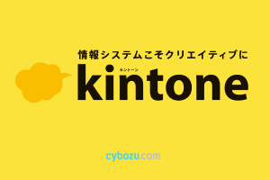

MITOU MAGAZINE
今月号のピックアップ
第1回「未踏サロン」7月31日（金）開催！
未踏社団として最初のイベント「未踏サロン」を開催します。参加方法や詳細は本文にてご確認下さい。
目次 見出しをクリックすると詳細へ移動します
■１ 代表理事からのご挨拶
代表理事の竹内郁雄です。ようやく正式のメールマガジンの発行体制が整い、記念すべき第1号を発行するに至りました。これからは原則月刊でみなさまに情報発信をしていきます。お時間のない方はイベントの告知などが記載されたトップのニュースだけでもお目通しください。なお、メールマガジンの内容はほぼ同じものがwww.mitou.orgのWebページにも掲載される予定です。
未踏社団は多くの企業さまや個人のボランティアの活動やサービスに支えられております。特に下記の法人会員の企業さまからは未踏社団の運営や会員サービスに関して根幹的なサポートをいただいております。深く感謝申し上げます。ここから生まれた成果等についてはその都度このメールマガジンにて報告いたします。
●法人会員の皆様（年額360万円）（加入順）
株式会社リクルートホールディングス
富士通株式会社
株式会社プロコミット
さくらインターネット株式会社
また、下記の企業さまからは会員サービスに関して各種のサポートをいただいております。深く感謝申し上げます。特筆すべき活用事例等についてはその都度のこのメールマガジンにて報告いたします。
●各種会員サービスをご提供いただいている企業・団体 （発音50音順）
株式会社AGSコンサルティング
サイボウズ株式会社
Xamarin Inc.
株式会社DMM.com
日本マイクロソフト株式会社
株式会社マネーフォワード
森・濱田法律事務所
サービスの詳細は追って会員サイトにてお伝えいたしますが、ご興味のある方は事務局（head-office@mitou.org）までご連絡ください。
このほかにもイベント等にはいろいろな企業さまにスポンサーになっていただいています。このような企業さまは今後も増えていくものと思います。ありがたいことです。
このほか、未踏IT人材発掘・育成事業を実施している独立行政法人情報処理推進機構（IPA）、およびU22プログラミングコンテスト等を通じて人材の発掘を行い、IT関連のベンチャー育成に携わっている一般社団法人コンピュータソフトウェア協会 （CSAJ）とは「未踏コンソーシアム」を組み、緊密な連携を行っております。
未踏社団は人の集まりです。みなさまの自発的な活動が未踏社団を支え、発展させ、それがみなさまご自身の明日のよりよい活動や発展につながっていくと信じております。みなさまのお気持によって未踏社団のいろいろな事業や活動が盛り上がっていくことを期待しております。
当面急がれるのは、未踏（的）人材のネットワーク作り、さらには日本型イノベーション・エコシステムの原型を形成することです。これについてはこれから精力的に進めていく予定です。みなさま方のご協力をよろしくお願い申し上げます。このメルマガ第1号のトップニュースで告知されている7月31日（金）の「未踏サロン」はその第一歩です。
これと並行して、みなさまの草の根交流や、テーマを絞った相互啓発・イノベーションアイデアの創出に役立つ研究会やワーキンググループの活動を本格化させます。8月4日（火）にはそのための「未踏研究会キックオフ」を開催する予定です。このような活動を積極的にやってみたいと思っておられる会員のご参加をお待ちしております。
普段の私とはだいぶ雰囲気の異なる固いご挨拶になってしまいましたが、始めくらいはこんな感じでキリッとご挨拶するのもいいかと思いました。再度になりますが、どうかみなさまご自身と未踏社団双方の発展のためにご協力いただきますよう、お願い申し上げます。
■２【参加者募集・無料】第1回 未踏サロンを7月31日（金）開催
皆様のご加入を祝して会員向けのキックオフイベント「第1回 未踏サロン」を7月31日（金）に、通常では入れない六本木ヒルズレジデンスB棟43Fのスカイラウンジを貸し切って行うことになりました。参加費は無料ですが、定員は50名ですので、先着順とさせていただきます。
当日は会員の皆様の交流を即しながら、未踏社団の活動紹介の他、プレゼンテーションの時間（各3分・計5組）も設けます。この機会に事業や近況の報告をしたい方は、当日、会場のLTスケジュールボードに記入して下さい（先着順）。
会場は、通常は六本木ヒルズレジデンス入居者しか入れない、レジデンスB棟のスカイラウンジを貸し切ります。特に未踏の卒業生の方にとっては、近年のステータスを交換しあうことで、お互いのスキルや指向の再発見がなされ、自己研鑚の契機につなげて欲しいと考えています。
日 時：7月31日（金）18:00-20:00（17:30受付開始）
場 所：六本木ヒルズレジデンス・スカイラウンジ（六本木ヒルズレジデンスB棟・43階）
住 所：〒106-0032 東京都港区六本木6丁目12-1_3
http://www.moriliving.com/ja/estate/residence/roppongihills
参加費：無料
定 員：50名（先着順）
参加希望の方は、こちらから申し込みお願いします。https://members.mitou.org
※通常は入居者以外入れない場所でセキュリティチェックが厳しい場所のため、事前の登録申請が必要です。事前にお名前をいただいている方しか入場できません。当日の入場方法に関しては、申し込みを済ませた方に事務局からご案内および地図をお送りします。
■３ 未踏研究会キックオフ 8月4日（火）開催予定
先日、「未踏研究会」が正式に設立されました。未踏研究会は従来の学会の枠に留まらない自由で未踏的な研究活動の基盤となる研究会です。ワーキンググループの設立・参加を行いやすくすることで、そこでの活動を通じて、研究成果の発信、会員同士・社団外の創造的人材との交流の促進、将来的な研究会の下地作りなどを行ってまいります。
そして、未踏研究会の活動を開始するにあたり、最初のイベントとして8月4日（火）に「未踏研究会キックオフ」の開催を計画しています（場所は秋葉原ダイビルを予定）。未踏研究会キックオフは、研究会やワーキンググループを立ち上げようという人たちとそういった活動に興味のある人たちとで、こういった活動をしようと思っているといった内容や、プレ的にこういった活動をしているといった報告などを発表して頂いて、飲食を交えつつ、インフォーマルに語り合おうという会合です。
未踏研究会キックオフの詳細は後日ウェブや「未踏サロン」で発表させて頂く予定です。みなさまの参加をお待ちしております。（常務理事・荒川淳平）
■４ kintoneアカウント発行のご案内
 未踏社団は、未踏OB/OG間のコミュニケーションが密になり、それが新しい面白いものが生まれるきっかけになるといいなと思っています。そこで、サイボウズ株式会社が開発し、自社内のコミュニケーションにも活用しているサービス「kintone」（キントーン）のアカウントをすべての正会員のみなさまに随時発行して参ります。
kintoneを使うと、Facebookのように気軽に思ったことを投稿したり、それに対してコメントしたり、「いいね！」したりできます。また、興味関心の共通する仲間で「グループ」を作り、密なコミュニケーションをすることができます。他のユーザには見えない、個人間でのメッセージのやりとりもできます。
このようにFacebookと同様の使い方もできるkintoneですが、Facebookとの一番の違いは、投稿内容の検索ができることです。円滑なコミュニケーションや将来の自分のためにも、検索できることは重要です。他にも便利なアプリやワークフローなどの機能も提供されています。
未踏社団で初めてkintoneを使う人向けの解説スライドを未踏OBでサイボウズ・ラボの西尾泰和さんにご提供頂きましたのでぜひご覧ください。 http://www.slideshare.net/nishio/kintone-46846678
（文面協力：サイボウズ・ラボ 西尾泰和 / 文責： 常務理事・荒川淳平）